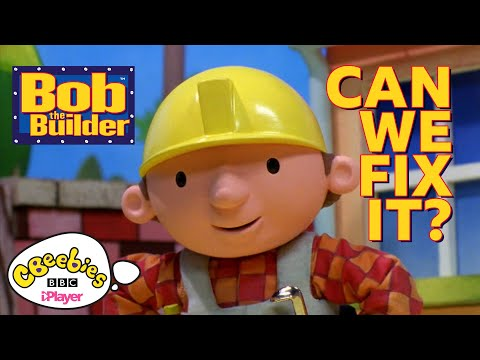
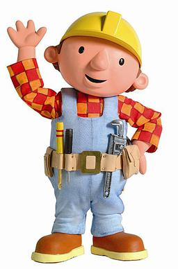

Bob the Builder


Details
My notes
bob the builder
Added from my childhood-show list. The exact series version, language, channel, and episodes I watched have not been recorded.
About the show
Bob the Builder follows Bob, Wendy, and their team of talking construction vehicles as they take on building jobs and solve problems together. The team includes Scoop, Dizzy, Roley, Lofty, and Muck.
The original programme began in 1999 and is known for its stop-motion look. Later versions have a different visual style. The pictures here show the original design for reference, not a confirmed identification of my viewing era.
A familiar line
“Can we fix it?” — “Yes, we can!”
Watch for recognition
Official CBeebies compilation with original footage